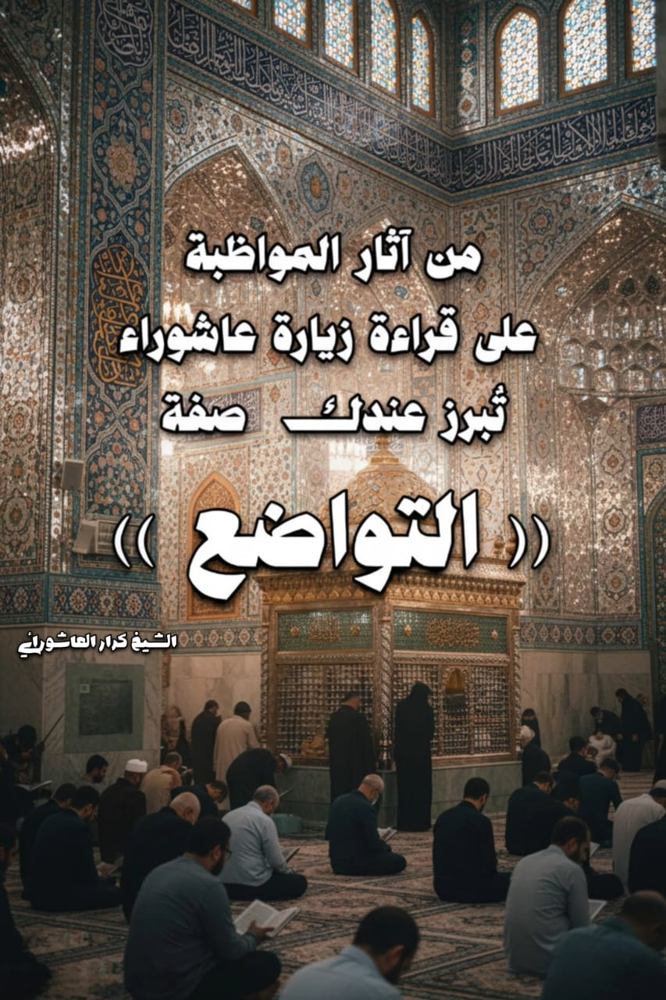
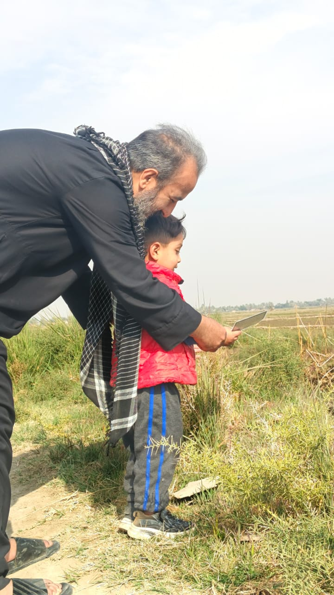
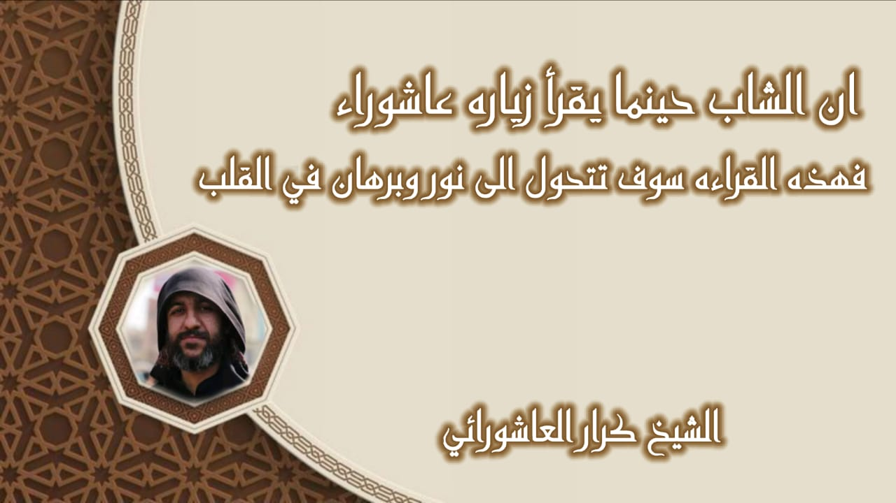
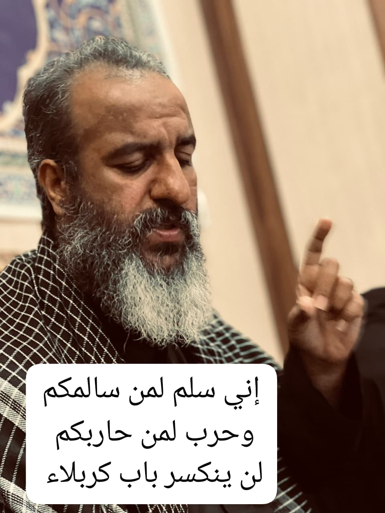
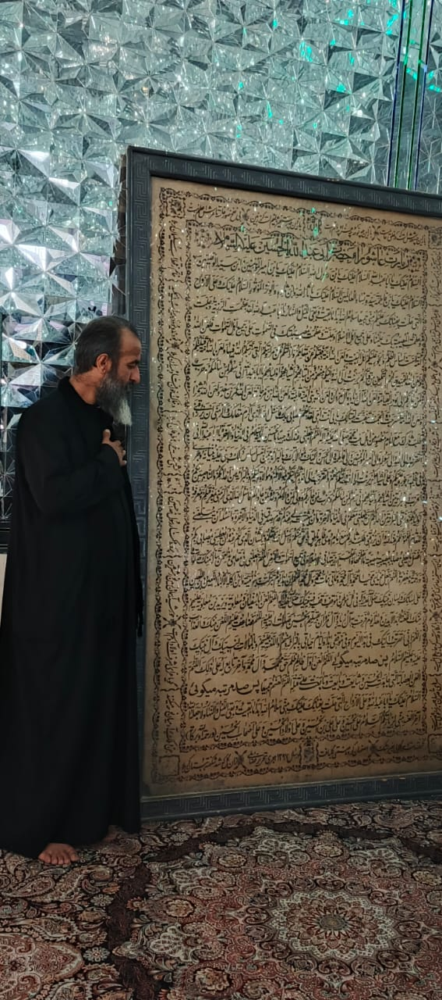
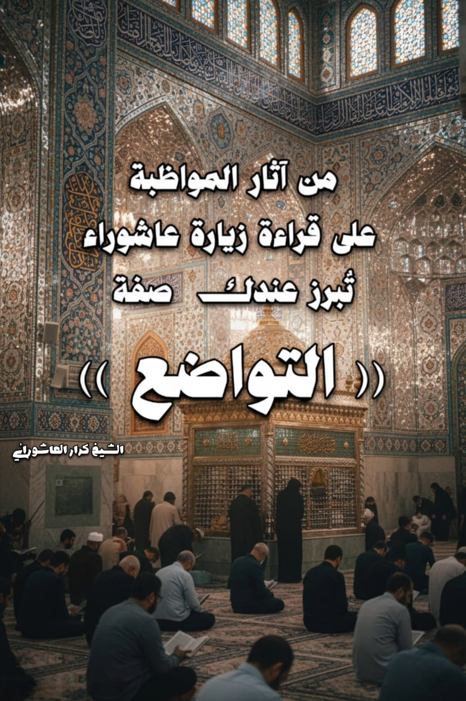
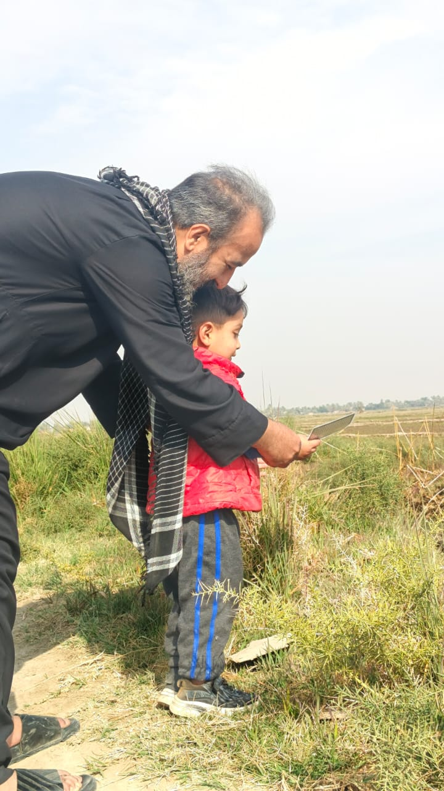
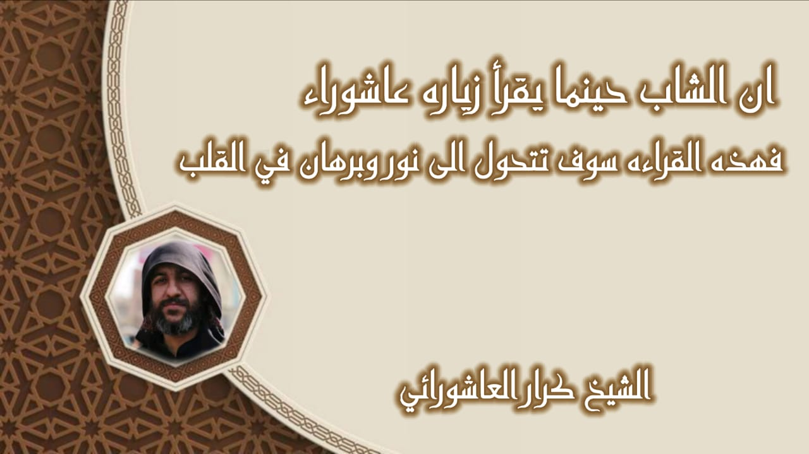
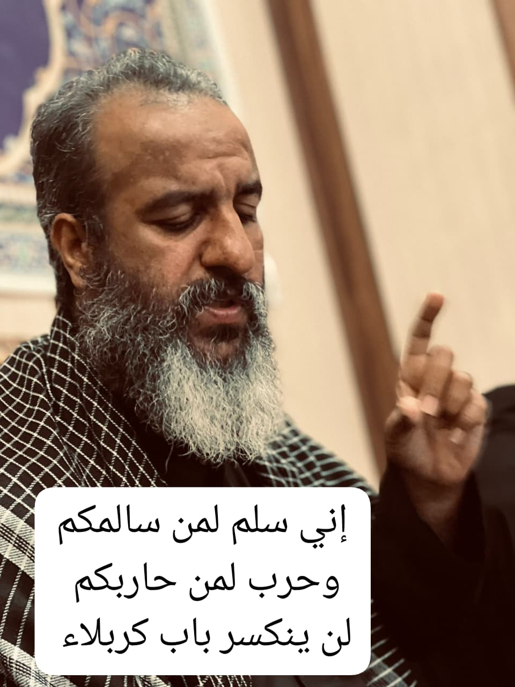
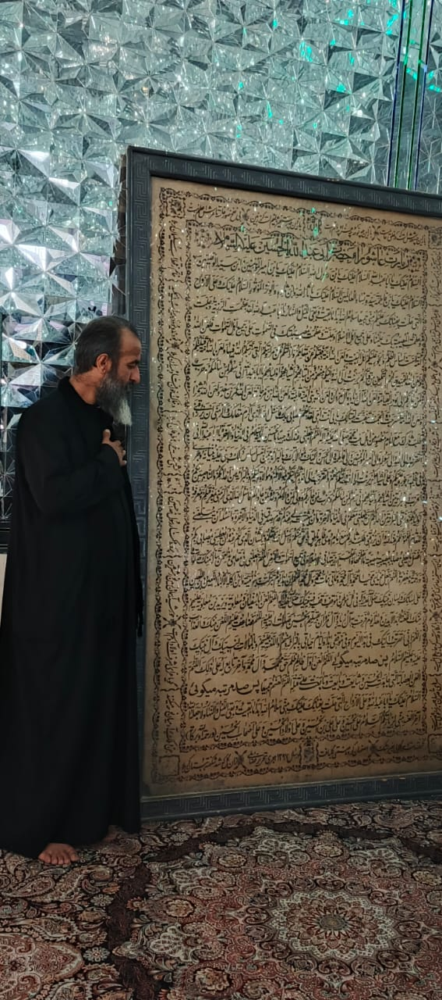

السَّلامُ عَلَيْكَ يا أَبا عَبْدِ اللهِ، السَّلامُ عَلَيْكَ يابْنَ رَسُولِ الله، السَّلامُ عَلَيْكَ يابْنَ أَمِيرِ المُؤْمِنِينَ وَابْنَ سَيِّدِ الوَصِيِّينَ، السَّلامُ عَلَيْكَ يابْنَ فاطِمَةَ سَيِّدَةِ نِساءِ العالَمِينَ، السَّلامُ عَلَيْكَ ياثارَ الله وَابْنَ ثارِهِ وَالوِتْرَ المَوتُورَ، السَّلامُ عَلَيْكَ وَعَلى الاَرْواحِ الَّتِي حَلَّتْ بِفِنائِكَ عَلَيْكُمْ مِنِّي جَميعاً سَلامُ الله أَبَداً مابَقِيتُ وَبَقِيَ اللَيْلُ وَالنَّهارُ.
يا أَبا عَبْدِ الله لَقَدْ عَظُمَتِ الرَّزِيَّةُ وَجَلّتْ وَعَظُمَتِ المُصِيبَةُ بِكَ عَلَيْنا وَعَلى جَمِيعِ أَهْلِ الإسْلامِ، وَجَلَّتْ وَعَظُمَتْ مُصِيبَتُكَ فِي السَّماواتِ عَلى جَمِيعِ أَهْلِ السَّماواتِ، فَلَعَنَ الله اُمَّةً أَسَّسَتْ أَساسَ الظُّلْمِ وَالجَوْرِ عَلَيْكُمْ أَهْلَ البَيْتِ، وَلَعَنَ الله اُمَّةً دَفَعَتْكُمْ عَنْ مَقامِكُمْ وَأَزالَتْكُمْ عَنْ مَراتِبكُمُ الَّتِي رَتَّبَكُمُ الله فِيها، وَلَعَنَ الله اُمَّةً قَتَلَتْكُمْ وَلَعَنَ الله المُمَهِّدِينَ لَهُمْ بِالتَّمْكِينِ مِنْ قِتالِكُمْ، بَرِئْتُ إِلى الله وَإِلَيْكُمْ مِنْهُمْ وَمِنْ أَشْياعِهِمْ وَأَتْباعِهِمْ وَأَوْلِيائِهِمْ.
يا أَبا عَبْدِ الله إِنِّي سِلْمٌ لِمَنْ سالَمَكُمْ وَحَرْبٌ لِمَنْ حارَبَكُمْ إِلى يَوْمِ القِيامَةِ، وَلَعَنَ الله آلَ زِيادٍ وَآلَ مرَوْانٍ وَلَعَنَ الله بَنِي اُمَيَّةَ قاطِبَةً وَلَعَنَ الله ابْنَ مَرْجانَةَ وَلَعَنَ الله عُمَرَ بْنَ سَعْدٍ وَلَعَنَ الله شِمْراً، وَلَعَنَ الله اُمَّةً أَسْرَجَتْ وَأَلجَمَتْ وَتَنَقَّبَتْ لِقِتالِكَ، بِأَبِي أَنْتَ وَاُمِّي لَقَدْ عَظُمَ مُصابِي بِكَ فَأَسْأَلُ الله الَّذِي أَكْرَمَ مَقامَكَ وَأَكْرَمَنِي بك أَنْ يَرْزُقَنِي طَلَبَ ثارِكَ مَعَ إِمامٍ مَنْصُورٍ مِنْ أَهْلِ بَيْتِ مُحَمَّدٍ صَلّى الله عَلَيْهِ وَآلِهِ.
اللّهُمَّ اجْعَلْنِي عِنْدَكَ وَجِيها بِالحُسَيْنِ عَلَيْهِ السَّلامُ فِي الدُّنْيا وَالآخِرةِ، ياأَبا عَبْدِ الله إِنِّي أَتَقَرَّبُ إِلى الله وَإِلى رَسُولِهِ وَإِلى أَمِيرِ المُؤْمِنِينَ وَإِلى فاطِمَةَ وَإِلى الحَسَنِ وَإِلَيْكَ بِمُوالاتِكَ وَبِالبَرائةِ مِمَّنْ قاتَلَكَ وَنَصَبَ لَكَ الحَرْبَ وَبِالبَرائةِ مِمَّنْ أَسَّسَ أَساسَ الظُّلْمِ وَالجَوْرِ عَلَيْكُمْ، وَأَبْرَأُ إِلى الله وَإِلى رَسُولِهِ مِمَّنْ أَسَّسَ أَساسَ ذلِكَ وَبَنى عَلَيهِ بُنْيانَهُ وَجَرى فِي ظُلْمِهِ وَجَوْرِهِ عَلَيْكُمْ وَعَلى أَشْياعِكُمْ، بَرِئْتُ إِلى الله وَإِلَيْكُمْ مِنْهُمْ وَأَتَقَرَّبُ إِلى الله ثُمَّ إِلَيْكُمْ بِمُوالاتِكُمْ وَمُوالاةِ وَلِيِّكُمْ وَالبَرائةِ مِنْ أَعْدائِكُمْ وَالنَّاصِبِينَ لَكُمْ الحَرْبَ وَبِالبَرائةِ مِنْ أَشْياعِهِمْ وَأَتْباعِهِمْ.
إِنِّي سِلْمٌ لِمَنْ سالَمَكُمْ وَحَرْبٌ لِمَنْ حارَبَكُمْ وَوَلِيُّ لِمَنْ وَالاكُمْ وَعَدُوٌ لِمَنْ عاداكُمْ، فَأَسْأَلُ الله الَّذِي أَكْرَمَنِي بِمَعْرِفَتِكُمْ وَمَعْرِفَةِ أَوْلِيائِكُمْ وَرَزَقَنِي البَرائةِ مِنْ أَعْدائِكُمْ أَنْ يَجْعَلَنِي مَعَكُمْ فِي الدُّنْيا وَالآخِرةِ وَأَنْ يُثَبِّتَ لِي عِنْدَكُمْ قَدَمَ صِدْقٍ فِي الدُّنْيا وَالآخِرَةِ، وَأَسْأَلُهُ أَنْ يُبَلِّغَنِي المَقامَ المَحْمُودَ لَكُمْ عِنْدَ الله وَأَنْ يَرْزُقَنِي طَلَبَ ثارِي مَعَ إِمامِ هُدىً ظاهِرٍ ناطِقٍ بِالحَقِّ مِنْكُمْ، وَأَسْأَلُ الله بِحَقِّكُمْ وَبِالَّشْأنِ الَّذِي لَكُمْ عِنْدَهُ أَنْ يُعْطِيَنِي بِمُصابِي بِكُمْ أَفْضَلَ مايُعْطِي مُصاباً بِمُصِيبَتِهِ، مُصِيبَةً ماأَعْظَمَها وَأَعْظَمَ رَزِيَّتَها فِي الإسْلامِ وَفِي جَمِيعِ السَّماواتِ وَالأَرْضِ!
اللّهُمَّ اجْعَلْنِي فِي مَقامِي هذا مِمَّنْ تَنالَهُ مِنْكَ صَلَواتٌ وَرَحْمَةٌ وَمَغْفِرَهٌ، اللّهُمَّ اجْعَلْ مَحْيايَ مَحْيا مُحَمَّدٍ وَآلِ مُحَمَّدٍ وَمَماتِي مَماتَ مُحَمَّدٍ وَآلِ مُحَمَّدٍ، اللّهُمَّ إِنَّ هذا يَوْمٌ تَبَرَّكَتْ بِهِ بَنُو اُمَيَّةَ وَابْنُ آكِلَةِ الاَكْبادِ اللَّعِينُ ابْنُ اللَّعِينِ عَلى لِسانِكَ وَلِسانِ نَبِيِّكَ صَلّى الله عَلَيهِ وَآلِهِ فِي كُلِّ مَوْطِنٍ وَمَوْقِفٍ وَقَفَ فِيهِ نَبِيُّكَ صَلّى الله عَلَيهِ وَآلِهِ.
اللّهُمَّ العَنْ أَبا سُفيانَ وَمُعاوِيَةَ وَيَزِيدَ بْنَ مُعاوِيَةَ عَلَيْهِمْ مِنْكَ اللَّعْنَةُ أَبَدَ الابِدِينَ، وَهذا يَوْمٌ فَرِحَتْ بِهِ آلُ زِيادٍ وَآلُ مَرْوانَ بِقَتْلِهِمُ الحُسَيْنَ صَلَواتُ الله عَلَيْهِ، اللّهُمَّ فَضاعِفْ عَلَيْهِمْ اللَّعْنَ مِنْكَ وَالعَذابَ الاليم، اللّهُمَّ إِنِّي أَتَقَرَّبُ إِلَيْكَ فِي هذا اليَوْمِ وَفِي مَوْقِفِي هذا وَأَيامِ حَياتِي بِالبَرائَةِ مِنْهُمْ وَاللَّعْنَةِ عَلَيْهِمْ وَبِالمُوالاةِ لِنَبِيِّكَ وَآلِ نَبِيِّكَ عَلَيهِ وَعلَيْهِمُ السَّلام.
اللّهُمَّ العَنْ أَوَّلَ ظالِمٍ ظَلَمَ حَقَّ مُحَمَّدٍ وَآلِ مُحَمَّدٍ وَآخِرَ تابِعٍ لَهُ عَلى ذلِكَ، اللّهُمَّ العَنْ العِصابَةَ الَّتِي جاهَدَتِ الحُسَيْنَ وَشايَعَتْ وَبايَعَتْ وَتابَعَتْ عَلى قَتْلِهِ اللّهُمَّ العَنْهُمْ جَميعاً.
السَّلامُ عَلَيْكَ يا أَبا عَبْدِ الله وَعَلى الأَرواحِ الَّتِي حَلَّتْ بِفِنائِكَ، عَلَيْكَ مِنِّي سَلامُ اللهِ أَبَداً مابَقِيتُ وَبَقِيَ اللَيْلُ وَالنَّهارُ وَلا جَعَلَهُ الله آخِرَ العَهْدِ مِنِّي لِزِيارَتِكُمْ. السَّلامُ عَلى الحُسَيْنِ وَعَلى عَلِيِّ بْنِ الحُسَيْنِ وَعَلى أَوْلادِ الحُسَيْنِ وَعَلى أَصْحابِ الحُسَيْنِ.
اللّهُمَّ خُصَّ أَنْتَ أَوَّلَ ظالِمٍ بِاللَّعْنِ مِنِّي وَأَبْدأْ بِهِ أَوَّلاً ثُمَّ الثَّانِي وَالثَّالِثَ وَالرَّابِعَ، اللّهُمَّ الْعَنْ يَزِيدَ خامِساً وَالعَنْ عُبَيْدَ الله بْنَ زِيادٍ وَابْنَ مَرْجانَةَ وَعُمَرَ بْنَ سَعْدٍ وَشِمْراً وَآلَ أَبِي سُفْيانَ وَآلَ زِيادٍ وَآلَ مَرْوانَ إلى يَوْمِ القِيامَةِ.
اللّهُمَّ لَكَ الحَمْدُ حَمْدَ الشَّاكِرِينَ لَكَ عَلى مُصابِهِمْ، الحَمْدُ للهِ عَلى عَظِيمِ رَزِيَّتِي، اللّهُمَّ ارْزُقْنِي شَفاعَةَ الحُسَيْنِ يَوْمَ الوُرُودِ وَثَبِّتْ لِي قَدَمَ صِدْقٍ عِنْدَكَ مَعَ الحُسَيْنِ وَأَصْحابِ الحُسَيْنِ الَّذِينَ بَذَلُوا مُهَجَهُمْ دُونَ الحُسَيْنِ عَلَيهِ السَّلامُ.
دعاء الفرج
اللَّهُمَّ كُنْ لِوَلِيِّكَ الحُجَّةِ بْنِ الحَسَنِ صَلَواتُكَ عَلَيْهِ وَعَلى آبائِه فِي هذِهِ السّاعَةِ وَفِي كُلِّ ساعةٍ وَلِيّاً وَحافِظاً وَقائِداً وَناصِراً وَدَلِيلاً وَعَيْناً حَتّى تُسْكِنَهُ أَرْضَكَ طَوْعاً وَتُمَتِّعَهُ فِيْها طَوِيلاً.
 








